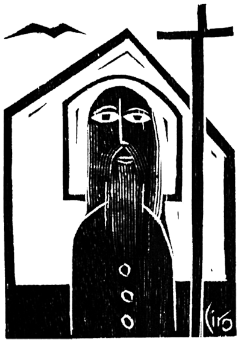
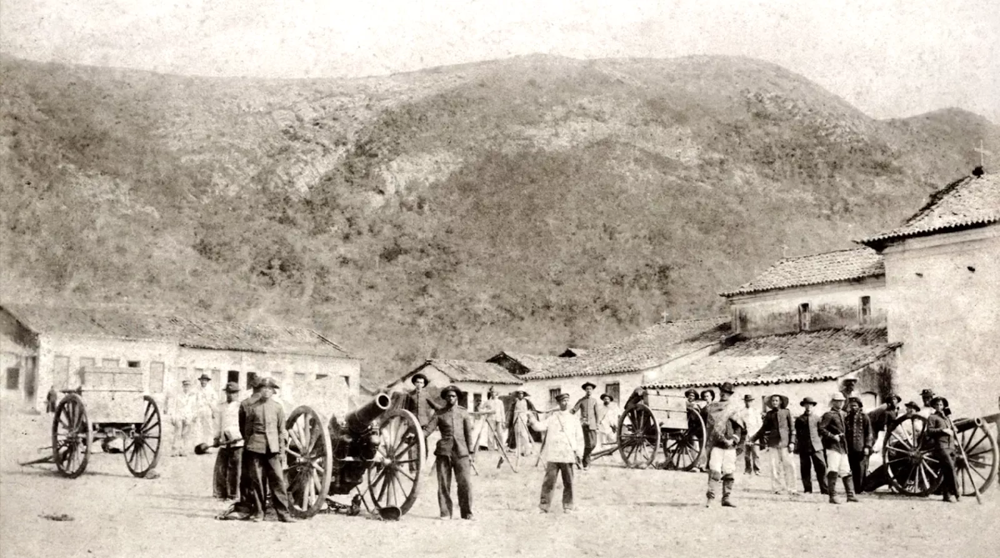
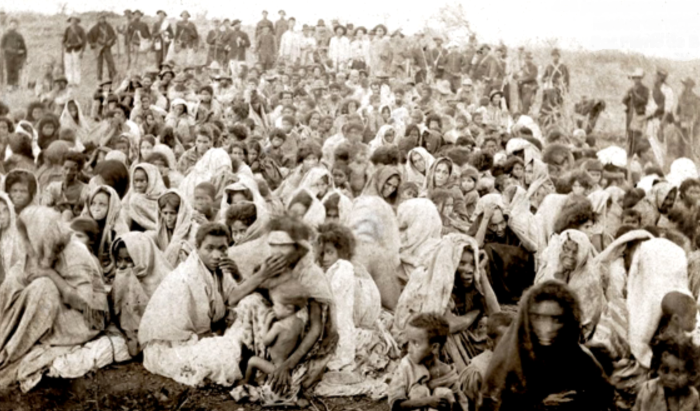

Guerras Brasileiras

|

|
 |
 |
 |
 |
| Revoltas Coloniais | Guerra de Independência | Guerra da Cisplatina | Guerra do Paraguai | Guerra de Canudos | Batalhas da FEB |
| (XVII - XVIII) | (1822 - 1824) | (1825 - 1828) | (1865 - 1870) | (1896 - 1897) | (1942 - 1945) |
| ● | ● | ● | ● | ● | ● |
Guerra de Canudos
Contextualizando…
A Guerra de Canudos foi um confronto entre o Exército Brasileiro e os moradores da cidade de Canudos, liderados por Antônio Conselheiro. Este foi um dos principais conflitos que marcaram o declínio da monarquia e a instalação do sistema republicano no Brasil. Também é considerado um dos conflitos mais sangrentos e inglórios de todo o Brasil, com um total de mais de 25 mil mortos.
Quem foi Antônio Conselheiro?
Antônio Conselheiro foi um líder religioso, fundador da cidade de Canudos. Abandonou sua casa e família em 1861, para viajar de povoado em povoado no sertão do Brasil pregando uma vida de meditação e santidade, ajudando a reformar e pintar igrejas e dando os conselhos pelos quais ficou famoso.
Ele dava seus conselhos nos fins de tarde nas praças e até no meio da rua. Os sertanejos o escutavam e iam de pouco a pouco abandonando suas vidas para seguir Antônio Vicente em suas pregações no Nordeste. Foi dessa maneira que Antonio Vicente Maciel virou o Antônio Conselheiro, pois as pessoas o chamavam de “o homem que dava conselhos”.
Com a proclamação da república em 1889, Antônio Conselheiro ficou revoltado pois acreditava na união entre a Igreja e o Estado, e que um Estado sem religião seria uma das obras do Anticristo para dividir as pessoas.
Dessa forma, passou a rasgar e queimar panfletos do Governo por onde passava, e incluiu em seus conselhos uma pregação contra a República, afirmando que esta era o próprio anticristo. Assim, Conselheiro e seus seguidores ficaram conhecidos por serem fanáticos religiosos e monarquistas, representando uma ameaça a República.
Foi nesse período depois da proclamação da República que Conselheiro fundou a cidade de Canudos, e mais problemas começaram a aparecer.
Canudos
A cidade de Canudos foi fundada em 1893 por Antônio Conselheiro junto com seus seguidores. Em meados de 1893, Conselheiro já tinha mais de 10 mil seguidores, que se instalaram de vez em Canudos.
Durante o período da fundação de Canudos, algumas outras tensões surgiram. Primeiro, o Barão de Canabrava reivindicou a propriedade em que Conselheiro havia se instalado com seus seguidores e criado a cidade. Nesse impasse, Conselheiro não devolveu a propriedade nem fez acordos. Depois, o líder religioso se recusou a pagar os impostos cobrados dos municípios pois não concordava com tal prática, alimentando ainda mais a opinião pública de que Conselheiro e seus fiéis eram fanáticos.
O início da Guerra de Canudos
Primeira Expedição para Canudos
A Guerra de Canudos começou efetivamente depois que Antônio Conselheiro encomendou um carregamento de madeira de um vendedor em Joazeiro. O vendedor não entregou a madeira, deixando Conselheiro revoltado, pois já havia pagado pela encomenda. Com o boato de que os Conselheiristas viriam buscar a força essa encomenda em Joazeiro, o prefeito da cidade pediu ajuda ao Governo Central para combater os “fanáticos”, como eram conhecidos. O Governo enviou 150 homens comandados pelo Tenente Pires Ferreira para ajudar nesse possível ataque.
O Tenente e seus homens ficaram por vários dias na cidade, e sem sinal dos moradores de Canudos, Pires Ferreira decidiu ir até a cidade com seus soldados para atacá-los. No meio do caminho foram surpreendidos e atacados pelos Conselheiristas, que mataram 10 soldados e deixaram outros 16 feridos.
Quando o boato desse ataque chegou na Capital, na época o Rio de Janeiro, isso foi entendido como uma verdadeira afronta a República, já que Conselheiro e seus seguidores eram assumidamente contra a República. Assim, uma expedição seria novamente comandada à Canudos.
A Segunda Expedição para Canudos
Após o ataque as tropas do Tenente Pires Ferreira, o Governo decidiu responder à afronta que os moradores de Canudos fizeram a República, como foi entendido na época. Para isso, foi convocado o Major Febrônio de Brito.
Em Novembro de 1896, o Major Febrônio partiu para Canudos com cerca de 600 homens e dois canhões Krupp, de fabricação alemã. As tropas chegaram nos arredores de Canudos em janeiro de 1897 com bastante dificuldade para carregar os pesados canhões, com fome e com sede.
Na noite do dia 17 de Janeiro, os Conselheiristas atacaram as tropas de Febrônio de Brito matando mais de 100 homens e deixando outros diversos feridos. O Major ordenou a retirada das tropas e fugiu, ainda sob ataque dos moradores de Canudos.
A Terceira Expedição para Canudos
Eduardo Bueno conta que com a chegada de mais uma notícia de derrota na capital, a elite local e os políticos ficaram bastante apreensivos. A imprensa já vinha acusando Antônio Conselheiro de querer reviver a Monarquia no Brasil, e Canudos era vista cada vez mais como uma ameaça para a República recém proclamada. Com essa pressão, o Coronel Moreira César foi convocado para comandar uma terceira expedição para Canudos. Em fevereiro de 1897 ele partiu com 1.200 homens e 6 canhões Krupp rumo à Canudos.
Em meados de Março as tropas do Coronel chegaram nas proximidades de Canudos. Logo no primeiro ataque ordenado por Moreira César, algumas dezenas de homens foram mortos, enfurecendo o Coronel, que ordenou uma investida completa dentro da cidade. No interior de Canudos, os moradores se esconderam e emboscaram as tropas, matando centenas de homens, incluindo o próprio Coronel Moreira César, que levou um tiro na barriga.
Antonio Conselheiro e seus seguidores vinham vencendo consecutivamente as tropas do Governo, mas sua sorte estava por acabar com a próxima expedição à Canudos, que foi a última.
A Última Expedição para Canudos
Com mais uma notícia de derrota das tropas do governo, o pânico havia tomado a Capital, levando inclusive a morte de dois editores de jornais no Rio de Janeiro, numa tentativa do Governo de impedir a propagação das notícias sobre Canudos.
Em maio de 1897, o próprio Ministro da Guerra convocou diversos oficiais do Exército para combater de vez Canudos, Antônio Conselheiro e seus fiéis. O General Artur Oscar foi o responsável pelo comando da operação, convocando 5 mil homens e levando 700 toneladas de munições, vários canhões e um enorme canhão chamado de “A Matadeira”, com cerca de três metros de altura.
As tropas chegaram em Junho nas redondezas de Canudos. Durante todo o mês de Junho as tropas de Artur Oscar tentaram fazer pequenas investidas em Canudos, perdendo praticamente todos os confrontos, deixando mais de mil soldados mortos. O General Artur Oscar pediu um reforço ao Governo, que reuniu as pressas 3 mil homens, que chegaram em Canudos em Agosto de 1897.
Com os frequentes ataques dos Conselheiristas e derrotas nas investidas, Artur Oscar decide autorizar o uso do canhão “A Matadeira” que começa a destruir a cidade de Canudos lentamente, começando pela igreja do local. Com a vantagem obtida pelos disparos de canhão, depois de um mês de combate a cidade de Canudos estava praticamente devastada, com milhares de mortos.
No dia 22 de Setembro de 1897, Antônio Conselheiro morreu. Não se sabe a causa da sua morte, mas a maioria dos historiadores defende que teria sido por problemas intestinais. Cerca de 15 dias depois da morte Conselheiro, seus fiéis ainda estavam abatidos com a sua morte, sofrendo com os ataques de canhão e as investidas em massa das tropas do Governo, o que os levou a levantar uma bandeira branca para negociar a rendição de 200 pessoas.
Dois dias depois da rendição, o Exército avançou e tomou de vez a cidade, matando os defensores restantes. A Guerra de Canudos tinha acabado e quase todos os seus 25 mil habitantes tinham sido mortos.